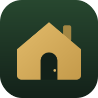

Spazio privato di casa. Serve l'accesso per entrare.
Gli accessi si creano dal pannello Supabase.
Nessuno può vedere i contenuti senza essere entrato.
Ricette di casa, menù della settimana e lista della spesa con i prodotti di stagione.
Apri —I libri di casa: chi li ha letti, chi li ha in prestito, quali sono in vendita.
Apri —Estratto conto letto e diviso per tipologia, con il totale di ogni mese.
Apri —Le schede di tutti, con gli esami archiviati e le note. I referti restano privati.
Apri —Contratti, garanzie, assicurazioni e le scadenze delle auto. Ti avvisa prima che scadano.
Apri —Il PDF ricevuto via mail: compili i campi, firmate in due, e lo riscarichi pronto.
Apri —Porta via referti, scansioni e dati in un archivio unico. Da tenere su un disco tuo.
Apri —Fotografi un documento e diventa un PDF diritto e leggibile, da archiviare o mandare.
Apri
Tieni la casa a portata di mano Installa l'app sul telefono: si apre a tutto schermo, come le altre.